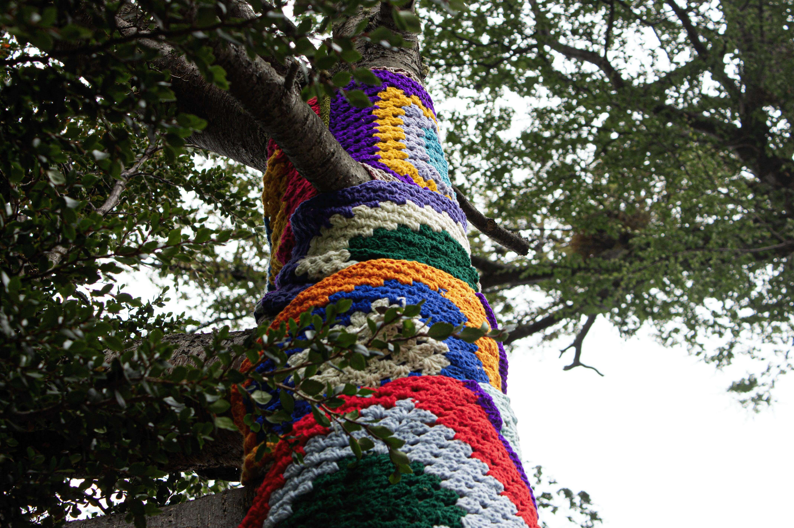
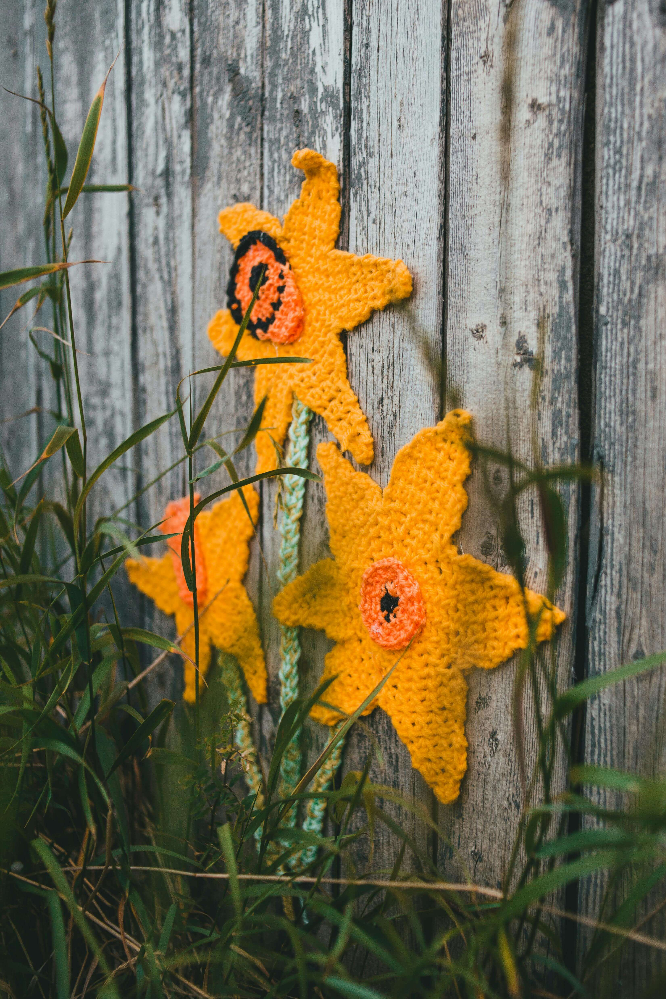
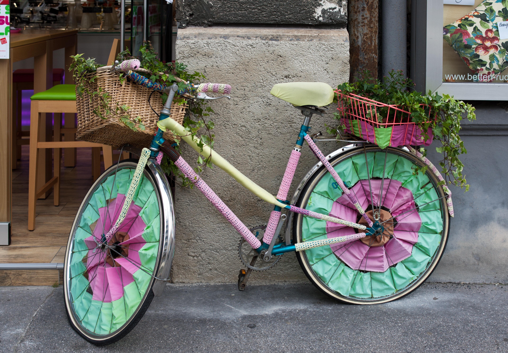
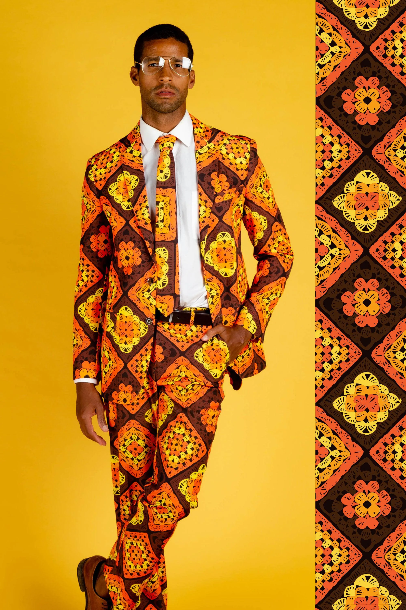

Crochet in the Wild!
Yarn Bombing
Pictures from around the world...
Roberta Smith




Subscribe
Enter your e-mail below to receive our latest news.
Articles
Hooking and Yarn News, January 1st, 2026
.jpg)
Crochet In Photography
Crochet Photography by Pietro Henricky
Riego de la Branchardière
The photography of Pietro Henricky is reviewed this week by the Mother of Crochet herself, Riego de la Branchardière. Henricky is a fashion photographer who has often worked with crochet artists and celebrates diversity. Henricky's photography strikes a beautiful balance between masculinity and feminity. In addition to taking beautiful fashion photograhy, Henricky is also a producer and film maker and creative Director. He currently lives and works in Fortaleza, Ceará, Brasil. He started taking photographs while spending time with his family, and was excited when he was able to turn his passion into a career. It has always been important to Henricky that he enjoys what he is doing, and he embraces the flaws in his photography and process. He enjoys shooting fashion (and we are excited that in this vein, he often photographs crochet and yarn textiles!) Henricky likes to photograph a variety of subjects, and often tries to tell his own story in his work.Though his fashion photography is amongst his favorite, he also explores other subjects. Personal histories and the effects that we reverberate with are amongst his most common themes in his work currently. The careful development of these ideas can be seen across his work. He is a proponent of artists creating work through a long and thoughtful creative process. He always says "Just get back to your process, making your work." You can see that this principle has guided his work throughout his career. (Read More...)

Celebrity Crochet
Tom Daley, Olympic Diver and Yarn Ambassador
Lavaz McLavaloo
🌈 Thomas Robert Daley (born 21 May 1994) is an English retired diver, YouTuber and television personality. He won the silver medal in the men's synchronized 10-metre at the 2024 Olympics, making him the first British diver to win 5 Olympic medals.
Tom, how old were you when you learned to knit and crochet? Who taught you? Which one attracted you first?
I started knitting 5 years ago (March 2020.) It was something I started to learn on a trip to Canada from a YouTube video. I was absolutely awful at first, I couldn't get the hang of it. One of the Australian divers and one of the Russian divers on that trip helped me while we were there and then on the flight home, one of our coaches on the British team gave me some tips and then with a lot of practice I started getting the hang of it. I only started to crochet in August 2020.
Do you prefer knitting or crocheting, or do you love both?
I honestly love both but for different reasons. I love knitting because I think it looks the best when finished, but I love the fact that with crochet it is so much easier to create and adjust sizes and shapes as you go.
What was your very first project? Can you describe it?
My first project was to be a scarf for my Mum, but it started terribly and then once I had a bit of practice, I went and bought some Rowan Big Wool in Vintage, as purple is my Mum's fave colour. It was a very simple scarf that had a garter stitch border, and then a K1B, P1 rib, which made a great looking scarf. I made it for her for Mother's Day!
How does your making fit into your diving career? Do you take your stitching along with you when you compete?
I haven't actually done a competition since I started knitting, but I will for sure take it with me when I go to the Olympics and knit between my dives. I find it to be a great form of mindfulness and a way of escaping the competition for a while.
What is the reaction you usually get when people see you stitching?
They usually don't believe that I have made the things that I have and I don't think people are used to seeing many young people stitching in the same way they might see older people do it.
How do you carve out time in your busy life for knitting and crochet?

I'm usually making something between training sessions, on my lunch break, or once my son is in bed and asleep.
Since becoming a father have you loved making things for your son?
I love making things for my son, as they are much faster than making for adults! Not sure he is as much of a fan though!
You have a pattern published on lovecrafts.com. Can you tell us the story of that sweater?
I had a lot of leftover colourful yarn and started to make something from it, and I was writing down what I was doing at each stage. I then wrote it up into a proper pattern and now sell it in order to raise money for The Brain Tumour Charity.
What is your favorite project you've ever made?
That changes each time I make something, but if I had to choose something, I was so chuffed with my Mum's scarf, as it was the first thing I ever made.
Do you have any techniques, tools are yarns that are your favourites right now?
I am always experimenting with new yarns, new weights, new needles etc. I am not good at yarn subbing and being confident in the amount of yarn I need if I am using something different to the pattern, but I like to try!
Do you have any advice for makers who are just starting out?
Be patient, if it feels really hard at first, you'll get the hang of it!

Patterns in Review, Fall Themed Suit
Not Your Average Granny Square
Lena Skvagerson
When I say the following two works, what does it bring to mind? Granny Squares. Do you think fondly of your time learning to crochet from your dear Granny Gran Gran, making these adorable squares that you can basically construct anything out of? (Think of them as the replicators of yarn.) Or does it make you smell that musty old blanket that was on the basement couch when you were growing up? Perhaps a faint smell of wet dog and microwave french fries? Or maybe it reminds of you of going through your Auntie's stuff before that big garage sale, and the smell of mothballs and cigarettes assault's your nose...
Whatever your association, there are some fabulous new suits this season featuring granny squares fabricated from yarn, as well as the images of granny squares printed as textiles. Granny Gran Gran would be so impressed with where crochet has gone since she was a little fledgling. Gone are the days of shamefully hiding your crochet tuxedo, as yarn has taken a step into the bougie spotlight, as the craft of fame and prosperity.
Take for instance this beautiful seventies fall themed granny square suit. This ensemble includes a jacket, slacks, and a tie, all matching in this fabulous granny square pattern. Did I hear Grany Gran Gran swoon from the grave? Yes, I did. Orange, yellow and brown come together to create the hellish nightmare couch from your dreams... No wait, they actually come together in a beatiful way in this crisp autumn suit straight out your mom's glory days. Think woodstock and hippies meet FASHION!! (Read More...)